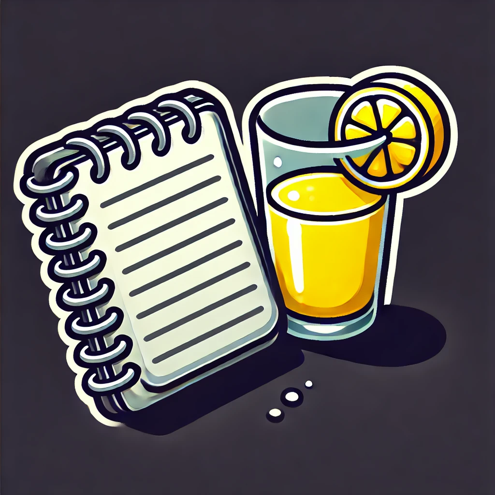

Detox Your Body: A 7-Day Lemon Detox Plan
A lemon detox plan can be a refreshing and effective way to cleanse your body, boost your immune system, and enhance your overall health. This 7-day lemon detox plan provides a structured approach to help you maximize the benefits of lemon detoxification.
Benefits of a 7-Day Lemon Detox Plan
- Boosts Immune System: Rich in vitamin C and antioxidants, lemons help strengthen your immune system.
- Aids Digestion: Lemon detox supports healthy digestion and helps eliminate toxins from the body.
- Enhances Hydration: Encourages increased water intake, promoting better hydration.
- Promotes Weight Loss: Can support weight loss by boosting metabolism and reducing appetite.
Preparation for the Detox
Before starting the detox, gather the following ingredients: - Fresh lemons - Fresh ginger - Fresh mint leaves - Cayenne pepper - Honey - Fresh berries - Cucumber - Turmeric
Ensure you have a sufficient supply of these ingredients for the entire week.
7-Day Lemon Detox Plan
Day 1: Classic Lemon Detox Water
Morning: - Start your day with a glass of classic lemon detox water. - Ingredients: 1 lemon, 1 glass of water, a pinch of cayenne pepper (optional), 1 teaspoon of honey (optional) - Instructions: Squeeze the juice of one lemon into a glass of water. Add cayenne pepper and honey if desired. Stir well and drink.
Throughout the Day: - Drink at least 8 glasses of water. - Eat light, nutritious meals, focusing on fruits, vegetables, and lean proteins.
Day 2: Lemon and Mint Detox Water
Morning: - Begin with a glass of lemon and mint detox water. - Ingredients: 1 lemon, a handful of fresh mint leaves, 1 glass of water, ice cubes (optional) - Instructions: Slice the lemon and add it to a glass of water. Add fresh mint leaves and ice cubes. Let it infuse for a few minutes before drinking.
Throughout the Day: - Continue drinking plenty of water. - Include fresh salads and steamed vegetables in your meals.
Day 3: Lemon, Ginger, and Turmeric Detox Water
Morning: - Drink a glass of lemon, ginger, and turmeric detox water. - Ingredients: 1 lemon, 1 inch of fresh ginger, 1/2 teaspoon of ground turmeric, 1 glass of water, a pinch of black pepper (optional) - Instructions: Grate the ginger and add it to a glass of water. Squeeze the juice of one lemon into the glass. Add ground turmeric and black pepper. Stir well and let it sit for a few minutes before drinking.
Throughout the Day: - Stay hydrated with water and herbal teas. - Incorporate whole grains and lean proteins into your diet.
Day 4: Lemon, Cucumber, and Basil Detox Water
Morning: - Start with a glass of lemon, cucumber, and basil detox water. - Ingredients: 1 lemon, 1/2 cucumber, a handful of fresh basil leaves, 1 glass of water, ice cubes (optional) - Instructions: Slice the lemon and cucumber and add them to a glass of water. Add fresh basil leaves and ice cubes. Let it infuse for at least 10 minutes before drinking.
Throughout the Day: - Drink water regularly. - Eat balanced meals with a focus on fresh, whole foods.
Day 5: Lemon and Berry Detox Water
Morning: - Enjoy a glass of lemon and berry detox water. - Ingredients: 1 lemon, a handful of mixed berries (strawberries, blueberries, raspberries), 1 glass of water, ice cubes (optional) - Instructions: Slice the lemon and add it to a glass of water. Add mixed berries and ice cubes. Let it infuse for a few minutes before drinking.
Throughout the Day: - Maintain hydration with water and detox waters. - Include a variety of colorful fruits and vegetables in your meals.
Day 6: Lemon Detox Smoothie
Morning: - Start your day with a lemon detox smoothie. - Ingredients: 1 lemon, 1 cup of water or coconut water, 1 cup of spinach, 1/2 cucumber, 1 small apple, a handful of fresh mint leaves, ice cubes (optional) - Instructions: Blend all the ingredients until smooth. Enjoy immediately.
Throughout the Day: - Drink water and herbal teas. - Eat nutrient-dense foods, focusing on whole grains, lean proteins, and fresh produce.
Day 7: Lemon and Ginger Detox Tea
Morning: - Begin with a cup of lemon and ginger detox tea. - Ingredients: 1 lemon, 1 inch of fresh ginger, 1 cup of hot water, 1 teaspoon of honey (optional) - Instructions: Grate the ginger and add it to a cup of hot water. Squeeze the juice of one lemon into the cup. Add honey if desired. Let it steep for a few minutes before drinking.
Throughout the Day: - Keep hydrated with water and detox teas. - Finish the detox with light, nutritious meals.
Tips for a Successful Detox
- Stay Hydrated: Drink plenty of water throughout the day.
- Eat Balanced Meals: Focus on whole, unprocessed foods.
- Listen to Your Body: Adjust the plan as needed based on your body's responses.
- Avoid Processed Foods: Minimize intake of processed foods, sugar, and caffeine.
- Get Enough Rest: Ensure you get adequate sleep and rest.
Conclusion
A 7-day lemon detox plan can be a powerful way to cleanse your body, boost your immune system, and promote overall health. By following this structured plan, you can enjoy the benefits of lemon detox and establish healthier habits. Remember to stay hydrated, eat balanced meals, and listen to your body throughout the detox process.
Comments